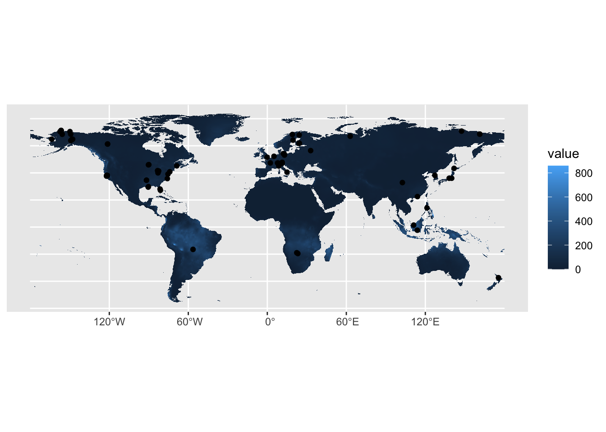

install.packages('sf')
install.packages('terra')
install.packages("remotes")
install.packages("tidyverse")
install.packages('tidyterra')
remotes::install_github("mikejohnson51/AOI")
remotes::install_github("mikejohnson51/climateR")Introduction to rasters with the terra package
Install libraries for this workshop:
Load libraries:
library(terra)
library(remotes)
library(tidyverse)
library(AOI)
library(climateR)
library(sf)
library(tidyterra)Rasters
A raster is a spatial data structure that subdivides an extent into rectangles known as “cells” (or “pixels”). Each cell has the capacity to store one or more values. This type of data structure is commonly referred to as a “grid” and is frequently juxtaposed with simple features.
The terra package offers functions designed for the creation, reading, manipulation, and writing of raster data. The terra package is built around a number of “classes” of which the SpatRaster and SpatVector are the most important.
SpatRaster
A SpatRaster object stores a number of fundamental parameters that describe it. These include the number of columns and rows, the coordinates of its spatial extent, and the coordinate reference system. In addition, a SpatRaster can store information about the file(s) in which the raster cell values are stored.
SpatVector
A SpatVector represents “vector” data, that is, points, lines or polygon geometries and their tabular attributes.
Working with climate data:
To become familiar with working with rasters, we will download climate data for an area of interest (AOI).
# First create an AOI
aoi.global <- aoi_get(country= c("Europe","Asia" ,"North America", "South America", "Australia","Africa", "New Zealand"))Visualize your AOI:
We will use TerraClimate, a dataset of high-spatial resolution (1/24°, ~4-km) monthly climate and climatic water balance for global terrestrial surfaces from 1958–2015 (Abatzoglou, 2018).
Download climate data using the library climateR for the AOI. For this exercise we will use climate normals, multi-decadal averages for climate variables like temperature and precipitation. They provide a baseline that allows us to understand the location’s average condition.
You can access monthly precipitation (“ppt”), monthly temperature minimum (“tmin”), monthly temperature maximum (“tmax”) climate normals and more.
Download monthly precipitation (ppt)
normals.ppt <- aoi.global %>% getTerraClimNormals(varname ="ppt")What is this object:
class(normals.ppt)[1] "list"class(normals.ppt$ppt)[1] "SpatRaster"
attr(,"package")
[1] "terra"A RasterStack is a collection of RasterLayer objects with the same spatial extent and resolution. In essence it is a list of RasterLayer objects.
To access the raster stack:
normals.ppt$pptclass : SpatRaster
dimensions : 3343, 8640, 12 (nrow, ncol, nlyr)
resolution : 0.04166667, 0.04166667 (x, y)
extent : -180, 180, -55.625, 83.66667 (xmin, xmax, ymin, ymax)
coord. ref. : +proj=longlat +ellps=WGS84 +no_defs
source(s) : memory
names : ppt_1~12010, ppt_1~12010, ppt_1~12010, ppt_1~12010, ppt_1~12010, ppt_1~12010, ...
min values : 0.0, 0.0, 0.0, 0.0, 0.0, 0.0, ...
max values : 945.8, 994.4, 827.2, 974.5, 2383.5, 2470.6, ...
unit : mm, mm, mm, mm, mm, mm, ...
time : 1961-01-01 to 1961-12-01 UTC normals.ppt$ppt %>% names() [1] "ppt_1961-01-01_19812010" "ppt_1961-02-01_19812010"
[3] "ppt_1961-03-01_19812010" "ppt_1961-04-01_19812010"
[5] "ppt_1961-05-01_19812010" "ppt_1961-06-01_19812010"
[7] "ppt_1961-07-01_19812010" "ppt_1961-08-01_19812010"
[9] "ppt_1961-09-01_19812010" "ppt_1961-10-01_19812010"
[11] "ppt_1961-11-01_19812010" "ppt_1961-12-01_19812010"normals.ppt$ppt %>% time() [1] "1961-01-01 UTC" "1961-02-01 UTC" "1961-03-01 UTC" "1961-04-01 UTC"
[5] "1961-05-01 UTC" "1961-06-01 UTC" "1961-07-01 UTC" "1961-08-01 UTC"
[9] "1961-09-01 UTC" "1961-10-01 UTC" "1961-11-01 UTC" "1961-12-01 UTC"ggplot() + geom_spatraster(data=normals.ppt$ppt[[1]]) + scale_fill_gradient( na.value = "transparent")<SpatRaster> resampled to 500280 cells.What is the “+ scale_fill_gradient( na.value =”transparent”)” doing?
Raster algebra
Many generic functions that allow for simple and elegant raster algebra have been implemented for SpatRaster objects, including the normal algebraic operators such as +, -, *, /, logical operators such as >, >=, <, ==, !} and functions such as abs, round, ceiling, floor, trunc, sqrt, log, log10, exp, cos, sin, max, min, range, prod, sum, any, all. In these functions you can mix terra objects with numbers, as long as the first argument is a terra object. If you use multiple SpatRaster objects, all objects must have the same resolution and origin.
Lets summarize monthly data to annual normals:
normals.ppt.annual <- normals.ppt$ppt %>% sum(na.rm = TRUE)
# look at the object
normals.ppt.annual %>% plot()
# Check the name of the layers:
names(normals.ppt.annual)[1] "sum"# re-name the layers:
names(normals.ppt.annual) <- "ppt"Summary functions (min(), max(), mean(), prod(), sum(), median(), cv(), range(), any(), all()) always return a SpatRaster object.
Use global if instead of a SpatRaster you want a single number summarizing the cell values of each layer.
normals.ppt.annual %>% global( na.rm=T, mean) mean
ppt 703.3037Spatial Summaries
You might also find it useful to create zonal summaries for each polygon within the simple feature. To do this we can use the function zonal, which takes a SpatRast and a SpatVect.
normals.ppt.annual.country <- zonal(x = normals.ppt.annual,
z= vect(aoi.global) , fun = "mean", as.polygons=TRUE, na.rm=TRUE)What did the function return?
class( normals.ppt.annual.country)[1] "SpatVector"
attr(,"package")
[1] "terra"Convert the SpatVect back to a simple feature and plot it.
normals.ppt.annual.country.sf <- st_as_sf(normals.ppt.annual.country)
ggplot( data=normals.ppt.annual.country.sf ) + geom_sf(aes(fill= ppt))
Extracting information to a point file:
For this exercise you will use your FLUXNET.CH4 vector file you saved last week and the monthly ppt data downloaded (normals.ppt.NAmerica$ppt).
Import your point file FLUXNET.ch4:
FLUXNET.ch4 <- st_read(dsn="data/products", layer="FLUXNET_CH4")Reading layer `FLUXNET_CH4' from data source
`/Users/ac3656/GitHub/EDS_course/data/products' using driver `ESRI Shapefile'
Simple feature collection with 81 features and 10 fields
Geometry type: POINT
Dimension: XY
Bounding box: xmin: -18223020 ymin: -4162002 xmax: 19542570 ymax: 7939774
Projected CRS: WGS 84 / World Equidistant CylindricalEnsure both files have the same coordinate reference system (CRS):
FLUXNET.ch4 Simple feature collection with 81 features and 10 fields
Geometry type: POINT
Dimension: XY
Bounding box: xmin: -18223020 ymin: -4162002 xmax: 19542570 ymax: 7939774
Projected CRS: WGS 84 / World Equidistant Cylindrical
First 10 features:
SITE_ID SITE_NA FLUXNET2 FLUXNET_ LOCATIO IGBP MAT
1 AT-Neu Neustift CC-BY-4.0 CC-BY-4.0 970 GRA 6.5
2 BR-Npw Northern Pantanal Wetland <NA> CC-BY-4.0 120 WSA 24.9
3 BW-Gum Guma <NA> CC-BY-4.0 950 WET 21.0
4 BW-Nxr Nxaraga <NA> CC-BY-4.0 950 GRA 21.0
5 CA-SCB Scotty Creek Bog <NA> CC-BY-4.0 280 WET -2.8
6 CA-SCC Scotty Creek Landscape <NA> CC-BY-4.0 285 ENF -2.8
7 CH-Cha Chamau CC-BY-4.0 CC-BY-4.0 393 GRA 9.5
8 CH-Dav Davos CC-BY-4.0 CC-BY-4.0 1639 ENF 2.8
9 CH-Oe2 Oensingen crop CC-BY-4.0 CC-BY-4.0 452 CRO 9.8
10 CN-Hgu Hongyuan <NA> CC-BY-4.0 3500 GRA 1.5
MAP MnDstn_ Country geometry
1 852.0 10829.38 Austria POINT (1259858 5245007)
2 1486.0 12208.78 Brazil POINT (-6279755 -1836549)
3 460.0 13930.19 Botswana POINT (2490339 -2111141)
4 460.0 14000.38 Botswana POINT (2580297 -2176085)
5 388.0 11237.65 Canada POINT (-13502876 6824876)
6 387.6 11237.65 Canada POINT (-13502965 6824764)
7 1136.0 10719.05 Switzerland POINT (936241.4 5255415)
8 1062.0 10771.80 Switzerland POINT (1097154 5211455)
9 1155.0 10698.00 Switzerland POINT (860911.5 5263898)
10 747.0 17202.71 China POINT (11420267 3656322)normals.ppt$pptclass : SpatRaster
dimensions : 3343, 8640, 12 (nrow, ncol, nlyr)
resolution : 0.04166667, 0.04166667 (x, y)
extent : -180, 180, -55.625, 83.66667 (xmin, xmax, ymin, ymax)
coord. ref. : +proj=longlat +ellps=WGS84 +no_defs
source(s) : memory
names : ppt_1~12010, ppt_1~12010, ppt_1~12010, ppt_1~12010, ppt_1~12010, ppt_1~12010, ...
min values : 0.0, 0.0, 0.0, 0.0, 0.0, 0.0, ...
max values : 945.8, 994.4, 827.2, 974.5, 2383.5, 2470.6, ...
unit : mm, mm, mm, mm, mm, mm, ...
time : 1961-01-01 to 1961-12-01 UTC You can transform one of the files if they dont match. Here I transform th vector:
FLUXNET.ch4 <- st_transform(FLUXNET.ch4, crs= crs(normals.ppt$ppt ))To check to see if everything lines up, I plot the files together:
ggplot() + geom_spatraster( data=normals.ppt$ppt[[1]]) +geom_sf( data =FLUXNET.ch4 ) + scale_fill_gradient( na.value = "transparent")<SpatRaster> resampled to 500280 cells.
Extract information from your raster stack using terra::extract()
FLUXNET.ch4.ppt <-terra::extract( normals.ppt$ppt, FLUXNET.ch4)
FLUXNET.ch4.ppt ID ppt_1961-01-01_19812010 ppt_1961-02-01_19812010 ppt_1961-03-01_19812010
1 1 43.3 41.4 64.0
2 2 231.2 194.3 170.2
3 3 111.7 92.6 66.1
4 4 106.9 82.1 64.0
5 5 20.4 16.9 16.2
6 6 20.4 16.9 16.2
7 7 76.8 77.7 84.1
8 8 68.1 58.3 67.4
9 9 76.5 69.1 82.1
10 10 5.2 8.5 21.1
11 11 46.2 34.1 37.8
12 12 47.5 36.3 40.8
13 13 56.2 52.7 70.7
14 14 45.4 42.0 40.6
15 15 49.6 33.0 36.2
16 16 31.0 27.3 26.0
17 17 49.6 33.0 36.2
18 18 49.7 34.1 37.2
19 19 56.7 51.2 51.7
20 20 23.7 48.0 76.0
21 21 253.0 263.0 286.6
22 22 138.9 94.9 85.4
23 23 44.1 37.8 49.7
24 24 94.9 71.2 53.7
25 25 38.9 52.0 90.6
26 26 33.9 44.3 83.6
27 27 16.6 19.7 37.8
28 28 420.8 282.9 276.3
29 29 74.0 59.3 66.8
30 30 85.1 98.8 99.3
31 31 49.6 29.3 31.6
32 32 8.1 7.3 8.9
33 33 8.1 7.3 8.9
34 34 10.4 9.3 10.6
35 35 47.5 37.4 36.0
36 36 35.9 29.9 33.4
37 37 41.7 32.8 37.0
38 38 31.6 23.0 19.0
39 39 62.5 43.4 47.1
40 40 4.8 3.3 3.3
41 41 2.9 3.6 3.0
42 42 4.0 6.0 8.0
43 43 15.1 12.6 8.3
44 44 15.1 12.6 8.3
45 45 15.1 12.6 8.3
46 46 2.9 3.6 4.0
47 47 2.9 3.6 4.0
48 48 75.3 71.0 56.5
49 49 73.4 70.1 54.6
50 50 47.0 45.2 60.7
51 51 49.3 69.8 84.1
52 52 75.7 71.1 61.1
53 53 18.0 15.8 19.9
54 54 91.0 109.2 118.8
55 55 91.0 109.2 118.8
56 56 68.8 67.6 71.3
57 57 6.4 10.1 9.2
58 58 10.2 15.5 18.3
59 59 116.3 131.6 108.5
60 60 121.2 142.0 115.1
61 61 29.1 24.8 40.6
62 62 43.2 61.1 76.4
63 63 86.6 71.8 103.2
64 64 73.3 65.6 44.1
65 65 100.5 90.8 99.7
66 66 2.9 3.6 4.0
67 67 24.2 24.0 18.1
68 68 59.6 53.7 74.2
69 69 55.4 48.3 64.3
70 70 28.9 23.9 41.5
71 71 69.7 60.4 40.2
72 72 69.7 60.4 40.2
73 73 109.6 105.0 73.4
74 74 83.3 73.0 105.2
75 75 74.2 68.4 49.9
76 76 74.2 68.4 49.9
77 77 74.2 68.4 49.9
78 78 74.2 68.4 49.9
79 79 74.2 68.4 49.9
80 80 16.1 13.5 8.3
81 81 49.9 45.6 63.0
ppt_1961-04-01_19812010 ppt_1961-05-01_19812010 ppt_1961-06-01_19812010
1 62.9 98.5 130.3
2 103.4 48.3 22.5
3 27.3 1.4 0.2
4 24.1 1.4 2.1
5 20.0 38.6 59.8
6 20.0 38.6 59.8
7 86.5 119.2 125.3
8 64.4 100.0 124.7
9 88.9 120.5 111.6
10 44.4 88.9 119.4
11 34.7 63.6 58.8
12 33.5 51.8 67.4
13 71.6 114.3 141.5
14 30.8 60.2 67.9
15 32.7 43.1 69.1
16 28.4 37.3 67.6
17 33.6 44.2 69.0
18 33.5 44.2 69.1
19 59.2 72.5 54.5
20 155.7 252.3 314.7
21 274.7 195.1 139.3
22 78.0 44.3 32.8
23 73.5 77.0 47.6
24 56.5 68.1 67.1
25 108.4 125.5 160.2
26 92.8 112.9 167.8
27 61.9 96.5 119.0
28 257.4 251.9 178.7
29 44.5 61.7 68.2
30 85.2 120.3 123.8
31 45.1 152.3 240.4
32 6.2 6.6 17.9
33 6.2 6.6 17.9
34 7.2 11.2 22.0
35 31.6 64.9 86.4
36 29.3 40.3 56.0
37 26.6 45.5 56.4
38 15.5 23.1 34.8
39 45.7 52.5 52.7
40 6.8 5.2 14.4
41 5.0 4.4 6.7
42 6.3 7.3 7.7
43 7.5 16.3 37.2
44 7.5 16.3 37.2
45 7.5 16.3 37.2
46 5.0 4.4 6.7
47 5.0 4.4 6.7
48 25.0 12.1 3.0
49 23.8 12.2 3.0
50 75.8 89.7 91.1
51 47.8 82.2 203.2
52 26.5 10.4 2.9
53 15.5 19.2 57.5
54 124.0 128.1 85.4
55 124.0 128.1 85.4
56 83.2 93.0 97.4
57 6.7 7.9 27.2
58 16.2 9.7 22.4
59 92.2 112.2 163.8
60 102.3 112.0 167.0
61 64.6 93.9 98.5
62 48.0 85.1 215.7
63 106.8 104.7 104.6
64 22.6 8.7 3.1
65 86.0 100.4 123.5
66 5.0 4.4 6.7
67 19.7 18.7 22.5
68 85.6 109.8 99.1
69 81.5 94.9 98.9
70 65.8 91.2 97.6
71 23.7 8.7 3.0
72 23.7 8.7 3.0
73 29.6 15.2 3.1
74 93.5 101.0 92.2
75 23.8 11.1 3.0
76 23.8 11.1 3.0
77 23.8 11.1 3.0
78 23.8 11.1 3.0
79 23.8 11.1 3.0
80 7.6 18.1 36.4
81 79.2 93.2 96.0
ppt_1961-07-01_19812010 ppt_1961-08-01_19812010 ppt_1961-09-01_19812010
1 139.1 134.5 92.3
2 19.2 26.4 45.7
3 0.0 0.0 4.2
4 0.0 0.0 3.9
5 75.9 66.8 36.9
6 75.9 66.8 36.9
7 127.4 132.3 101.7
8 140.7 143.7 105.2
9 112.0 112.3 97.7
10 117.9 104.8 113.2
11 67.8 62.5 46.4
12 63.5 67.6 56.5
13 148.7 143.1 97.1
14 67.1 76.0 52.3
15 89.5 81.4 60.1
16 95.6 76.8 46.1
17 88.6 81.5 61.1
18 88.5 81.6 61.1
19 57.9 50.5 55.5
20 309.8 320.9 228.9
21 92.5 89.3 122.0
22 24.9 33.6 86.8
23 37.0 57.8 69.6
24 113.3 141.2 128.6
25 141.9 145.6 185.9
26 160.9 130.2 173.4
27 367.8 293.4 161.6
28 183.2 280.3 269.7
29 76.4 75.5 82.9
30 127.1 123.3 127.4
31 287.3 241.9 268.3
32 29.7 30.1 22.2
33 29.7 30.1 22.2
34 27.8 29.3 22.9
35 88.1 83.4 65.3
36 68.3 70.4 59.0
37 83.5 85.5 59.9
38 67.7 51.0 32.6
39 50.8 54.6 54.2
40 23.9 33.5 18.7
41 24.1 27.7 19.2
42 27.4 32.0 21.3
43 58.9 51.1 32.2
44 58.9 51.1 32.2
45 58.9 51.1 32.2
46 24.1 27.7 20.3
47 24.1 27.7 20.3
48 0.2 1.4 5.8
49 0.2 1.4 5.8
50 90.8 83.7 80.8
51 188.2 195.1 151.8
52 0.2 1.3 3.9
53 89.9 74.0 45.1
54 93.0 72.5 81.1
55 93.0 72.5 81.1
56 96.1 94.0 98.7
57 48.2 46.5 19.1
58 43.4 60.4 27.2
59 193.3 183.1 147.8
60 179.4 175.2 139.5
61 98.2 102.9 102.1
62 182.5 194.0 157.1
63 116.9 104.0 106.1
64 0.2 1.4 4.1
65 143.6 160.5 135.0
66 24.1 27.7 20.3
67 49.9 91.1 65.3
68 109.3 81.5 74.6
69 95.3 88.0 81.2
70 96.2 101.5 102.1
71 0.2 1.4 4.1
72 0.2 1.4 4.1
73 0.3 1.5 5.4
74 106.0 102.0 107.1
75 0.2 1.4 4.9
76 0.2 1.4 4.9
77 0.2 1.4 4.9
78 0.2 1.4 4.9
79 0.2 1.4 4.9
80 53.2 47.8 33.2
81 94.0 87.6 81.8
ppt_1961-10-01_19812010 ppt_1961-11-01_19812010 ppt_1961-12-01_19812010
1 71.6 66.2 56.2
2 105.8 155.4 200.1
3 24.7 46.1 73.6
4 19.6 42.8 71.4
5 32.6 25.4 20.5
6 32.6 25.4 20.5
7 94.3 89.5 93.9
8 73.9 74.9 72.6
9 98.3 88.2 94.5
10 59.4 10.6 3.1
11 40.8 51.1 48.0
12 46.7 48.2 48.2
13 69.5 70.7 68.8
14 44.0 48.3 46.3
15 70.0 60.5 51.4
16 46.0 36.0 32.9
17 67.9 58.6 50.4
18 68.9 59.6 51.4
19 70.7 64.2 64.5
20 64.6 36.5 23.8
21 157.7 248.8 266.6
22 122.5 155.2 150.1
23 91.2 78.4 51.3
24 99.9 113.8 120.2
25 180.1 76.7 47.6
26 108.4 53.8 29.7
27 48.3 45.4 21.0
28 291.7 349.9 433.0
29 87.6 84.8 84.1
30 95.0 94.7 119.9
31 276.4 224.3 156.2
32 16.1 12.4 10.1
33 16.1 12.4 10.1
34 22.2 15.5 11.3
35 71.3 52.3 51.0
36 60.8 42.9 41.9
37 61.0 54.1 43.6
38 35.4 27.9 30.2
39 69.5 63.8 60.7
40 12.9 9.3 6.8
41 11.1 4.8 3.4
42 12.8 5.9 5.7
43 19.6 15.2 16.0
44 19.6 15.2 16.0
45 19.6 15.2 16.0
46 11.1 4.8 3.4
47 11.1 4.8 3.4
48 23.4 49.5 69.6
49 23.4 48.6 69.6
50 64.6 75.1 67.9
51 65.2 50.1 46.8
52 25.9 52.8 74.7
53 24.4 20.8 21.4
54 111.1 123.3 138.1
55 111.1 123.3 138.1
56 96.0 124.1 100.8
57 1.1 9.8 1.1
58 8.8 12.6 14.8
59 101.7 94.6 122.9
60 97.6 100.2 126.2
61 82.6 50.0 42.0
62 73.1 45.4 40.6
63 102.7 99.1 98.4
64 23.2 49.3 67.3
65 97.3 94.8 90.3
66 11.1 4.8 3.4
67 36.2 29.4 28.0
68 66.4 81.8 72.9
69 65.9 79.0 69.1
70 84.7 48.2 41.0
71 23.2 47.5 64.7
72 23.2 47.5 64.7
73 28.0 69.0 102.9
74 90.4 83.6 92.7
75 23.3 48.5 68.4
76 23.3 48.5 68.4
77 23.3 48.5 68.4
78 23.3 48.5 68.4
79 23.3 48.5 68.4
80 22.4 18.3 18.6
81 64.2 78.0 69.5What did the extract function return?
class(FLUXNET.ch4.ppt)[1] "data.frame"Combine extracted information to the simple feature:
FLUXNET.ch4.ppt.sf <- FLUXNET.ch4 %>% cbind(FLUXNET.ch4.ppt)Visualize your work:
ggplot()+ geom_sf(data = aoi.global) + geom_sf( data = FLUXNET.ch4.ppt.sf, aes( col= ppt_1961.09.01_19812010)) FLUXNET data can be used to understand patterns in natural methane fluxes. Evaluating the conditions where measurements are taken is essential to designing a useful model.
Download monthly temperature (tmin and tmax) to understand the differences in temperature for the tower locations. Use precipitation and temperature summaries in Assessment 2/3.
Assessment 2
We will use data from FLUXNET CH4 to explore patterns in natural methane emissions. Explore the distribution of tower sites and create visualizations that may be helpful to understand in the design and development of models. You are welcome to use any additional data or just new plot types.
References
Abatzoglou, J., Dobrowski, S., Parks, S. et al. TerraClimate, a high-resolution global dataset of monthly climate and climatic water balance from 1958–2015. Sci Data 5, 170191 (2018). https://doi.org/10.1038/sdata.2017.191